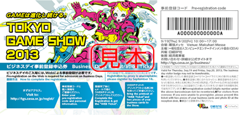
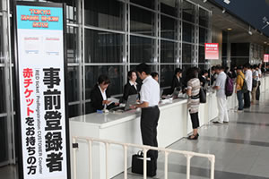
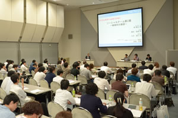

初めてのTGS～ビジネスデイ編
- 写真に関しては、いずれもTGS2012のときのものです。参考としてご覧ください。
前日までに確認しておきたいこと
ビジネスデイに来場する方は、事前登録はお済みですか？
「ビジネスデイ」に入場できるのは、ゲームビジネス関係者のみです（ゲーム関連企業にお勤めの方、ゲーム関連のお仕事に従事されている方、ゲーム関連企業とのビジネスを検討している方、流通関係者など）。各出展社などが関係者に配布している「ビジネスデイ事前登録申込券」を入手してWeb登録をするか、Web事前登録申請（登録料 5,000円＜税込み＞）が必要になります（詳しくはコチラ）。

「ビジネスデイ事前登録申込券」は出展社などがゲームビジネス関係者に配布しています。
Webフォーム（登録サイトはコチラ）に、ゲーム関連のお仕事をされていることを証明する個人情報などを登録していただき、東京ゲームショウ事務局による審査を通過した方のみが入場可能になります。18歳未満の方、学生の方、ゲーム関係者以外の方は、入場をお断りいたします。
事前登録料（5,000円）の領収書発行をご希望の場合、事前登録完了メールに領収書を入手できるページのURLが記載されていますので、そのページから領収書をプリントアウトしてください。
当日は受付にて、申し込みをされたご本人様であることを確認させていただきます。「事前登録完了メールからダウンロードできるWebチケット」「写真入り身分証明書」「名刺２枚」をご提示ください。

なお、「TGSフォーラム 専門セッション」のチケットでご入場いただく方は、当日、会場での登録になります（「名刺3枚」「写真入り身分証明書」が必要です）。
取材をするプレスの方は、事前登録はお済みですか？
特にビジネスデイにご取材をいただく報道関係の皆様には、当日、受付の混雑が予想されるため、Webでの事前登録をオススメしています（プレス登録方法はコチラ）。
イベント当日にお申し込みいただいても取材はできますが、その際、「当日取材申込用紙」に必要事項をご記入いただき、プレス受付にて「名刺（2枚必要です）」「社員証や運転免許証など、ご本人様の顔写真入りの証明書」「直近の署名記事、編集スタッフ名記載欄、媒体URL等のコピーや本誌」をご提示ください。

宿泊するホテルは予約しましたか？
東京ゲームショウの会場となる幕張メッセ周辺のホテルは、直前や当日に予約を取るのは難しいかもしれません。
幕張メッセにアクセスが良い鉄道の駅は、最寄りのJR京葉線「海浜幕張」駅のほか、会場近くまでバス便が出ているJR総武線「幕張本郷」駅があります（アクセスガイドはコチラ）。それぞれの沿線にあるホテルも候補として考えられます。
なお、「ビジネスデイ」向けのオフィシャルツアーは用意されていません。
各社の展示内容をチェックしましたか？
各ブースやイベントの内容は、公式サイトや出展各社のサイトで更新されていきます。公式サイトでは、フロアマップや各社の出展内容の詳細を、会期直前に発表いたします。
なお、公式サイトではメディアパートナーや出展社のニュースが随時更新されているので、事前に情報がチェックできます。
「東京ゲームショウ2013」のソーシャルサービス公式アカウントは、以下の通りです。
- ツイッター：「Tokyo_Game_Show」
- フェイスブック：「Tokyo Game Show」
こちらでも最新情報を更新していきますので、ぜひフォローしてください。
「TGSフォーラム 基調講演」の申し込みはしましたか？
ビジネスデイの初日、9月19日（木）10時30分から、8ホールのイベントステージにて「基調講演」を開催します。入場は無料で、当日のお申し込みも受け付けていますが（名刺が2枚必要となります）、Webで事前申込した方が優先されます。確実に聴講を希望する方は、事前申込をオススメします（事前申込はコチラ）。
当日は「申し込み完了画面」をプリントアウトして持参してください。
なお、「基調講演」は、東京ゲームショウの入場受付をしていなくても聴講できます。入場受付をする時間がない場合は、直接、「8ホール イベントステージ」の「基調講演」受付までお越しください。

「TGSフォーラム アジア・ゲーム・ビジネス・サミット」の申し込みはしましたか？
ビジネスデイの初日、9月19日（木）午後13時30分から、8ホールのイベントステージにて「アジア・ゲーム・ビジネス・サミット」を開催します。
インドネシア、韓国、タイ、台湾、マレーシアといったアジアのゲーム会社のトップの方々が集まり、国境を越えて広がるゲームビジネスの課題や展望を語り合います。
入場は無料で、当日のお申し込みも受け付けますが（名刺が２枚必要です）、Webで事前申込した方が優先されます。確実に聴講を希望する方は、事前申込をオススメします（事前申込はコチラ）。
当日は「申し込み完了画面」をプリントアウトして持参してください。
なお、東京ゲームショウの入場受付をしていなくても聴講可能です。入場受付をする時間がない場合は、直接、「8ホール イベントステージ」のアジア・ゲーム・ビジネス・サミット受付までお越しください。

「TGSフォーラム 専門セッション」の申し込みはしましたか？
ビジネスデイの2日目、9月20日（金）午後に、ゲーム業界の最新事情が分かる「TGSフォーラム 専門セッション」を開催します。聴講は有料（1セッション：前売8,000円、当日10,000円／ビジネスデイ事前登録申込券付き）で、当日のお申し込みも受け付けますが（名刺が２枚必要です）、Webで事前申込した方が優先されます。確実に聴講を希望する方は、事前申込をオススメします（事前申込はコチラ）。
当日は、コンビニ（ファミリーマート、セブン-イレブン）などで発券したチケットをご持参ください。
東京ゲームショウの入場受付をしていなくても聴講可能です。入場受付をする時間がない場合は、国際会議場2Fの「専門セッション」の受付まで、直接、お越しください。
